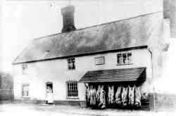

| A little local history |
|
The name Layham has its origins in the language of the Anglo-Saxons, who started to settle Suffolk from AD 449. The village is recorded as Hligham in 995; Leiham in the Domesday Book in1086 and Leyham in documents of the 1300s. The Old English words ‘hlig’ and ‘ham’ come together to describe a ‘sheltered homestead or village’. ‘Ley’ is derived from Old English ‘leah’ meaning a ‘clearing in a wood’. Both possible origins indicate that there was no very special feature here – it was probably simply a desirable place at which to set up a small farming community in a clearing in what would have been a wooded area near to a river. The soil was from glacial outflow and offered a loam of good fertility. Whilst there is no written record of habitation prior to the tenth Century, the area was generally favourable for settlement and there is evidence of earlier peoples setting up home nearby. Half way up Hook Lane, towards Hadleigh and overlooking the valley of the Brett, a Roman habitation has been identified and in Lower Raydon (the next door Parish) there are crop markings that suggest a circular defended settlement from the Iron Age. It appears that Layham has always been a farming community based on two manors. These are recorded as far back as the Domesday survey when they are described as being held by Harold in one case and farmed by Eudo, a tenant, in the other. These manors eventually became named Netherbury and Overbury – names which survive today. Ownership of these manors has changed many times over the years, sometimes both being in the possession of the same lord. Occasionally owners lived in the village but more often than not the land would be managed on his / her behalf and many families lived in tenements and worked small parcels of land. The life of the village has remained centred on agriculture and associated activities right up to the present day.  There are records from Victorian times of a community that supported a watermill and two windmills, a blacksmith, a wheelwright and carpenter, a tailor, a cobbler, two butchers, two brickworks and three public houses. There was also a school and school house beside the church (both buildings are still there). White’s Directory of 1855 describes Layham as “a pleasant village on both sides of the River Brett…has in its picturesque parish 577 souls, and 2488A (acres) of land, having a good mixed soil and abounding in cherry trees”. It is interesting that, over 150 years later with around three times the number of houses, the population is almost the same! The Directory describes the parish as being “in two manors” and “The Rev. Richard Daniel, of Combs, is lord of both. The manors were anciently held by the De Leyhams, Woodstocks, and Hollands; and passed from the latter to the Mortimers and from them to (among others) the Greys and Howards. During the greater part of (the 1700s), they were held by the D’Oyley family.” Apart from a number of individual Victorian builds the village did not change a great deal until multiple developments started with housing provided by the local council on Upper Street and Mill Lane in the 1950s. This was closely followed by Brett Green and Old Orchard in the 1960s and the population doubled. By this time, when it might have been viable, the school had closed. |
{kind=link}
{kind=link}
{kind=link}
{kind=link}